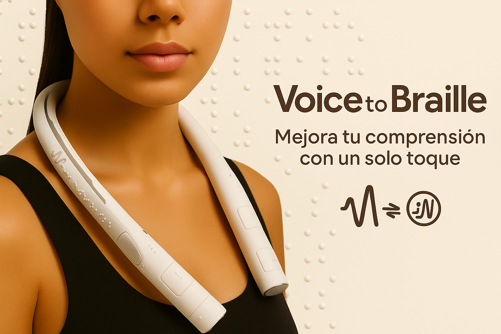

Voice to Braille
Mejora tu comprensión con un sólo toque.
La voz toma forma. El braille cobra vida.
Contexto histórico y evolutivo de la tecnología braille
Desde hace casi dos siglos, el braille ha sido la herramienta más poderosa para que las personas ciegas puedan acceder a la lectura, la escritura, en definitiva, al conocimiento en general. A los tres años un joven francés llamado Louis Braille perdió la vista, por lo que en el siglo XIX decidió crear este sistema basado en puntos en relieve que se leen con el tacto. Su invento cambió radicalmente la vida de millones de personas. Durante décadas, el braille se escribía manualmente usando elemenros como una pizarra o un punzón. Después llegaron las máquinas Perkins (que funcionaban como una máquina de escribir, pero en braille) y más adelante los dispositivos electrónicos; tales como líneas braille, anotadores digitales o impresoras especializadas. Sin embargo, estas herramientas siempre han tenido una barrera puesto que, o bien requieren saber braille, o bien su coste es tan alto que están fuera del alcance de los individuos que desean usarlas. Por ello, nuevos proyectos como HaptiBraille Communicator o Voice to Braille, de los que se hablará a lo largo de esta web, marcan una nueva etapa. El fundamento de los dispositivos mensionados no trata solo de leer lo que está escrito, sino de convertir la voz en lenguaje braille directamente, sin tener que saber usarlo previamente. Esto no elimina el braille tradicional, sino que lo acerca más a quienes no han podido aprenderlo o simplemente buscan otra forma de comunicarse.
¿Qué es Voice to Braille?
Un instrumento portátil diseñado para mejorar la comunicación de personas con discapacidad auditiva y visual. Permite convertir los sonidos emitidos al hablar en tiempo real a través de vibraciones hápticas en patrones braille. Tiene forma de collar, tal y como se ve en la imagen 1. La finalidad principal es facilitar la comprensión del lenguaje oral a través del sentido del tacto, sin necesidad de pantallas ni intérpretes.
¿Por qué usar este dispositivo?
Como sabemos, estamos viviendo una época de cambios tecnológicos que avanza a pasos de gigante. Cada mes descubrimos nuevas invenciones que hacen la vida de los Homo sapiens más fácil y cómoda.
En el último siglo se ha demostrado cómo el ser humano es capaz de crear desde un algoritmo que mantiene conectado y en estado de alerta a todo aquel que no pone barreras, (por ejemplo TikTok) el cual juega con la dopamina (un neurotransmisor que actúa como mensajero químico en el cerebro), hasta dispositivos
que mejoran la vista (un ejemplo es el microchip Prima, desarrollado hace dos semanas) de aquellos que la han perdido con el paso del tiempo. Por tanto, se concluye que estos dispositivos tienen diversos fines, algunos buscan retener nuestra atención y otros se basan en el bienestar social.
Voz a braille claramente pretende ser una herramienta de apoyo, transformación y mejora. Si bien es cierto que existen aplicaciones como Braille Scanner (que permiten traducir
braille a texto), o aparatos que convierten el habla en lenguaje braille, como HaptiBraille Communicator (de los cuales hablaremos más adelante). Este dispositivo libera las manos, olvidando el concepto de retener un elemento entre ellas para una comunicación verdaderamente natural. En lugar de pensar en cómo emplear este objeto, el usuario comprende de forma sencilla su mecanismo.
Funcionamiento
Voice to Braille es un instrumento que transforma lo que el emisor dice en texto braille de forma inmediata. Tiene un micrófono muy preciso que capta los sonidos y gracias a un sistema con inteligencia artificial, los convierte en texto digital. Es importante destacar que el contenido se puede escuchar en voz alta a través de un altavoz especial, o enviarlo a una impresora braille entre otros dispositivos. Todo esto hace que sea una herramienta práctica para comunicarse y acceder a la información de forma más sencilla.
Componentes
A continuación hablaremos de las partes que conforman este instrumento. Cabe destacar que no han sido decritas por el creador, aunque basándome en otros dispositivos similares he supuesto que debe contener una estructura similar a la que se describe bajo este texto.
- Micrófono
- Recoge la voz de la persona que habla, incluso es capaz de comprender el lenguaje humano en lugares con ruido.
- Procesador de señal
- Convierte el audio en texto, utilizando tecnologías de reconocimiento de voz posiblemente basadas en inteligencia artificial.
- Sistema de traducción a braille
- Transforma el texto obtenido al patrón braille.
- Sistema de control central
- Coordina todo el proceso: desde la entrada de voz, el procesamiento, la traducción y la salida.
- Batería
- Permite que el aparato funcione por si solo durante un tiempo limitado, sin necesidad de estar conectado a la corriente.
- Carcasa
- Es la parte externa del sistema que transmite las vibraciones, captadas a través del tacto, con el fin de que el usuario portador del mismo pueda llevar a cabo la comunicación.
Beneficios
- Comunicación accesible
Permite convertir a braille los sonidos en tiempo real, sin necesidad de intérpretes ni pantallas. Esto supone un gran paso para las personas sordociegas, ya que les da la posibilidad de seguir una conversación directamente, sin depender de nadie más y favoreciendo al concepto de comunicación fluida.
- Multilingüe
Uno de los aspectos más interesantes es que reconoce varios idiomas, algo especialmente útil en contextos bilingües o si se viaja al extranjero. Hace que el individuo no tenga que preocuparse por el idioma que se está usando, ya que el sistema se adapta automáticamente.
- Discreto y cómodo
Teniendo en cuenta la parte física, observamos que no estamos hablando de un aparato grande o incómodo, sino de un dispositivo portátil que se lleva con facilidad. A diferencia de otros sistemas más aparatosos, aquí no hace falta tener las manos ocupadas ni mirar pantallas. Se puede usar con total normalidad, sin interrumpir otras tareas, además pasa desapercibido algo que muchos valoran.
Estado del producto
A día de hoy, sigue siendo un prototipo en fase de desarrollo, aunque existe un modelo funcional y ya ha sido presentado oficialmente. SignTech la empresa creadora, lo mostró en el CES 2025 donde fue reconocido por su carácter innovador. No estamos ante una mera idea, puesto que el dispositivo funciona, ha sido probado y tiene una base tecnológica sólida. Sin embargo, aún no ha llegado al mercado ni está disponible para el público. Por lo que la tecnología aún necesita seguir puliéndose antes de lanzarse de forma oficial.
Dispositivos similares
En la siguiente tabla se comparan otros dispositivos que realizan funciones similares con el protagonista de esta web: Voice to Braille.
| Dispositivo | Uso principal | Interacción | Tipo de público | ¿Conversaciones en tiempo real? | Precio |
|---|---|---|---|---|---|
| HaptiBraille Communicator | Comunicación recíproca. | Dispositivo portátil que vibra bajo los dedos para formar letras en braille. | Personas sordociegas. | Sí, permite hablar y recibir mensajes. | 1.279 € |
| RBD 520 Braille Notetaker | Escritura personal y lectura de notas. | Entrada por voz y salida en pantalla braille. | Personas ciegas que pueden oír. | No está pensado para conversar. | 3.340 € |
| Braille Scanner | Traducción de texto braille a texto digital. | Debido a que es una aplicación de smartphone, su uso se realiza a través de la cámara del móvil con el fin de escanear el texto en braille y convertirlo en lenguaje convencional. | Personas que no leen braille. | No. | Gratuita. |
| Voice to Braille | Traducción de voz a braille en tiempo real. | Conversión mediante IA a texto en braille editable o imprimible. | Personas ciegas o con baja visión. | Sí, aunque aún no se comercializa. | No disponible a la venta. |
Limitaciones y posibles mejoras
Aunque Voice to Braille presenta avances notables, aún existen ciertos aspectos que podrían mejorarse en futuras versiones.
-
No es cómodo para todo el mundo
Llevarlo en el cuello puede no gustarle a algunas personas. Tal vez en el futuro se pueda integrar en otro objeto más discreto, incluso cuando se compruebe que esta estructura funciona se puede llegar a realiar una versión más pequeña.
-
No sabemos si funciona bien con todos los acentos o voces
Como usa reconocimiento de voz, puede que no entienda a todo el mundo igual. Podría mejorarse añadiendo ajustes de sensibilidad.
-
Aún no lo podemos probar
Como no está a la venta, no sabemos si realmente es tan cómodo o útil como parece.
Glosario de términos
- Háptico
- Aquello que es táctil.